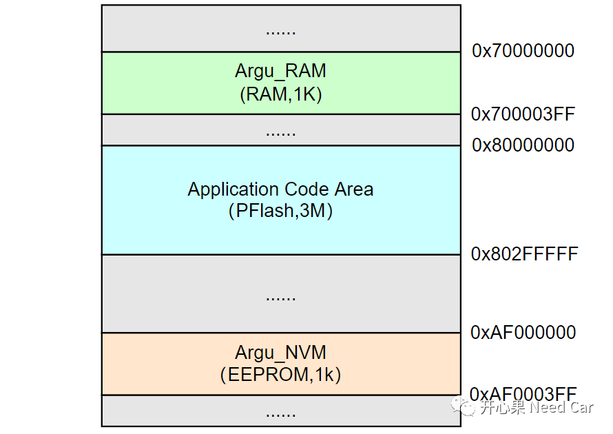
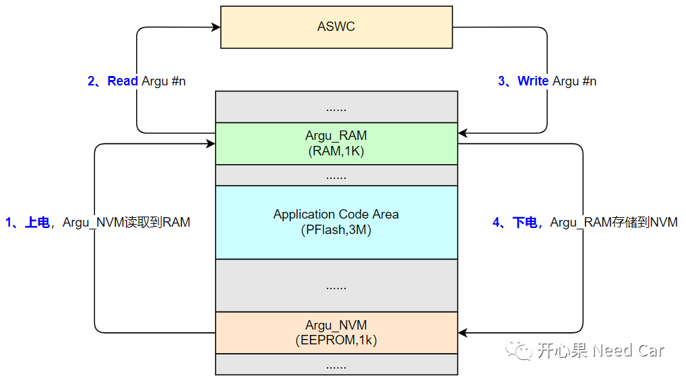
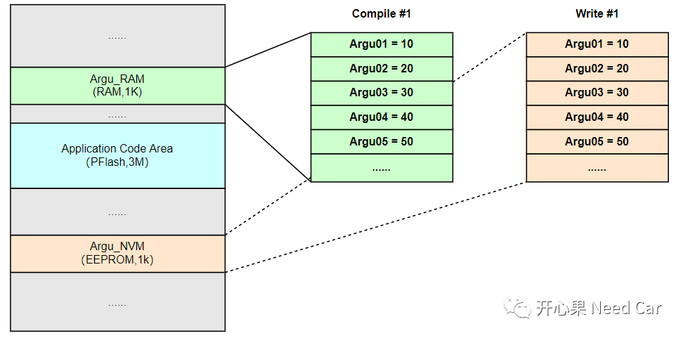
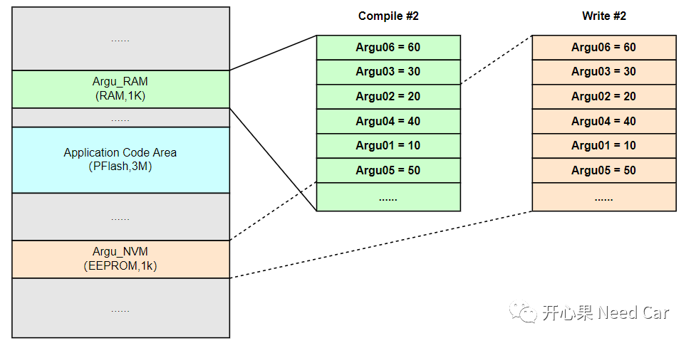
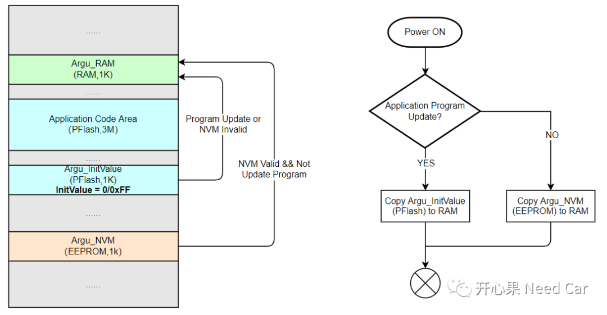
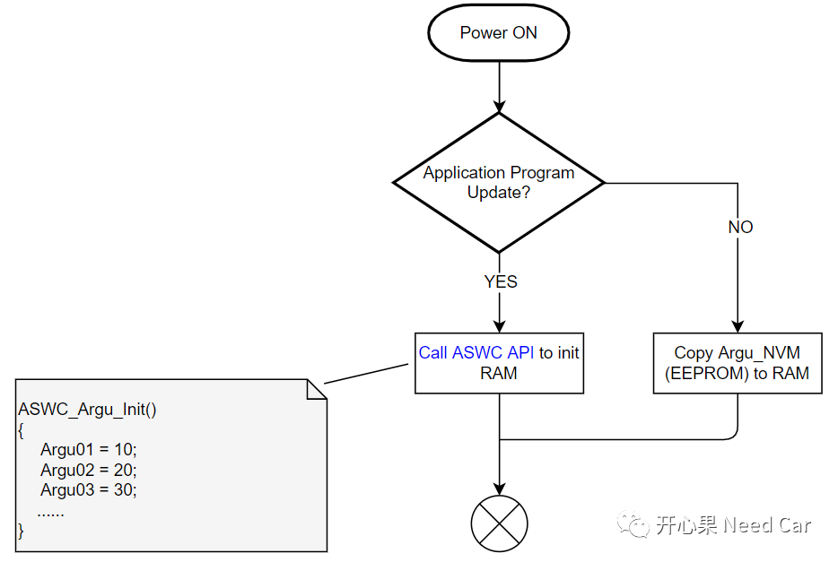

项目开发中，我们会遇到这样的需求：预留一定的NVM空间，存储一些关键参数。比如：DEM模块需要存储DTC对应的快照数据、拓展数据、状态位数据，某应用层(ASWC)需要存储车辆里程数等。
存储这些信息到NVM，主要是便于下次车辆启动时的再次使用。根据参数的重要程度，可以选择不同的存储类型：时时存储、事件存储、下电存储。
NVM模块作为重要信息的存储介质，角色分量自然不轻，当然，带来的问题也不容小觑。本文讨论一个NVM问题：Application更新后，第一次从NVM读取数据，参数值异常！
NVM、Application、RAM全局变量的内存分布先认识一下本文要关注的几个重要存储区域：Application Code Area、NVM Area、RAM Area。
Application Code Area：存放程序代码（非易失存储区，PFlash，比如：0x80000000~0x802FFFFF，3M）。
NVM Area：存放关键参数（非易失存储区，EEPROM，比如：0xAF000000~0xAF0003FF，1K）。
RAM Area：存放关键参数（易失存储区，比如：0x70000000~0x700003FF，1K）。
注意：本文讨论的NVM Area和RAM Area的空间大小一致，这里的RAM Area是为存储关键参数预留的空间，这些信息需要下电时存储到NVM。
上述三个区域的内存空间位置如下所示：

对于存储到NVM中的关键参数，主要包含两种操作：读取、写入。以ASWC使用的参数为例，讨论ASWC使用的参数如何与NVM中存储的参数产生联系。
上电读取参数过程：当程序冷启动时（ECU上电），程序初始化的过程中，会调用NvM_ReadAll()接口将存储在NVM中的参数读取到对应的RAM区。之后ASWC从RAM区读取所需的参数Argu_#n;下电写入参数过程：ASWC在运行的过程中，由于车辆运行工况的改变，会改写参数Argu_#n的值，由于参数Argu_#n的重要性，需要在程序下电时，将其写入NVM，以便于程序下次运行时重新使用。

假设：NVM预留的空间为1K = 1024 byte，有5个参数（Argu01~Argu05，uint8类型）需要存储到NVM，编译器编译后，将这5个参数存放在指定的RAM区域，正常下电时，将这5个参数写入NVM，RAM区与NVM区参数的对应位置如下所示：

上电时，调用NvM_ReadAll()接口，读取NVM中的参数，按照如上的顺序Copy到RAM区，ASWC在使用的时候不会出现问题。由于算法的修改，ASWC可能需要增加一些变量，比如：增加一个参数Argu06。Application程序修改以后，需要重新编译，虽然编译器依然可以将Argu01~Argu06放入我们指定的段空间，但是编译器不会主动帮我们调整参数在指定段空间（RAM区）的顺序，程序重新编译后，如果正常下电，再次将参数存储到NVM，RAM区与NVM区参数存放位置可能如下所示：

以TASKING编译器为例，如果需要将参数Argu01~Argu05放入自定义段（.ASWC_Argu），可以进行如下定义：
#pragma section ".ASWC_Argu"uint8 Argu01;uint8 Argu02;uint8 Argu03;uint8 Argu04;uint8 Argu05;#pragma section
2、Application程序修改对NVM参数读取的影响
如果Application程序修改（增加参数Argu06）以后，将编译器编译出的新版软件重新刷写，重新上电读取NVM参数，此时NVM中的参数还是ASWC预期的吗？可能已经不是预期值，为什么不是预期的值呢？Application Pragram增加一个新的变量Argu06，编译器重新编译以后，Argu06在RAM区域的分布可能更改。Application程序更新后（Compile #2），如果没有正常下电，NVM中的数据并不会更新，NVM中仍然保持着上次存储的参数值(Write #1)。所以，当Application Pragram更新后，第一次运行时，从NVM中读取上来的参数无法与新的RAM区参数位置一一对应，进而导致ASWC读取的参数值异常，比如：Argu06值为60，实际Argu06获取的是10（Argu01的值），因为RAM区Idx = 0位置和NVM区Idx = 0位置的参数不一致导致，如下所示：
在实际的工程项目中，此类问题需要分情况讨论：
如果Application程序更新后，要求RAM区中的参数使用默认值，比如：0或者0xFF。可以根据所使用的Block开辟一段等大小的PFlash空间存放初始值，当识别到Application程序更新或者NVM Block无效时，将PFlash中的初始值赋给RAM区参数；如果Application程序没有更新，且NVM参数有效，将NVM中参数赋给RAM区域，如下所示：

如果Application程序更新后，要求RAM区中的参数使用初始值，此种情况可能会复杂一些，因为每个参数的初始值可能不同，如果参数的初始值不同，使用PFlash区存储就变得不现实，因为RAM区的参数位置可能会改变，所以PFlash区无法一一对应RAM区的参数。怎么办呢？本文讨论一种可能性：ASWC提供使用参数的初始值接口，如下所示：

提示：程序重新编译后，RAM区参数位置变动原因：指定段增加变量、指定段减少变量、源文件变动（*.c文件）等。
可以在NVM中预留一个指定地址（比如：0xAF0FFFFC），该指定地址存放Application的CRC值，如果Application有更新，则CRC更新，通过比对CRC可以知道Application程序是否更新，即使是裸版（从未刷写过Application程序），也可以通过比对CRC值，确认RAM区关键参数从何处读取更合适。点击下方关注，一起聊聊Autosar/嵌入式，如果需要，联系作者进群，给你更专业的解答